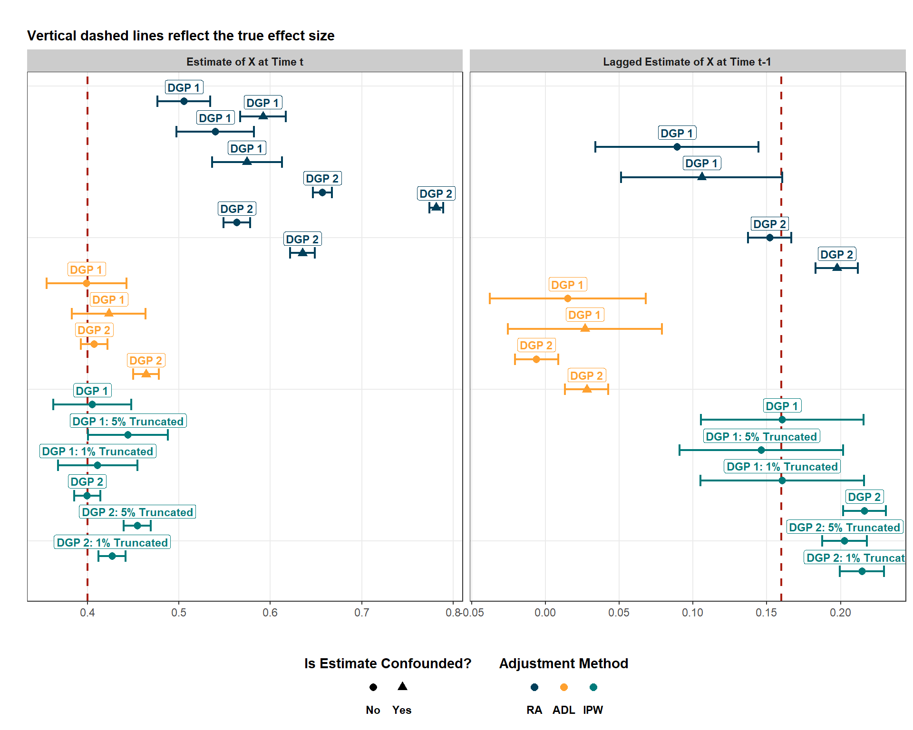
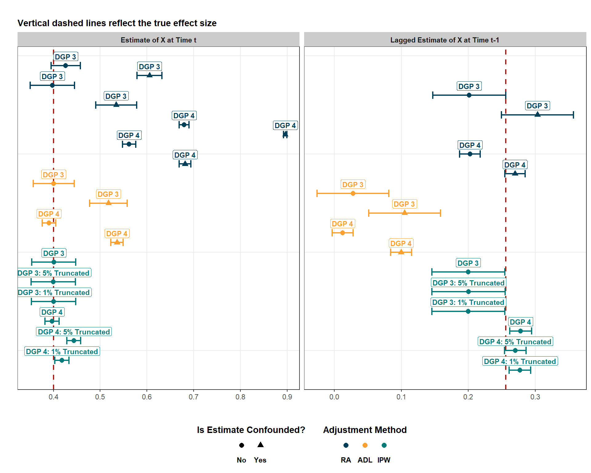

Simulating Complex Panel Data to Validate Model Performance in Estimating Dynamic Treatment Effects
causal inference
simulation
dags
ipw
msm
panel data
Making causal inferences is hard, and making causal inferences is harder with complex panel data. In this blog post, learn how to test the validity of your panel data models using simulation!
Published
December 30, 2024
Code
# Load Librariespacman::p_load("dplyr", # Data Manipulation"ggplot2", # Data Visualization"ggdag", # Visualizing DAGs"dagitty", # More DAGs Stuff"tidyr", # Re-Shaping Data"purrr", # map() Function"ipw", # IPWinstall =FALSE)# Define a Custom Theme - Taken From Andrew Heiss's Blogsblog_theme <-function() {theme_bw() +# Start with theme_bwtheme(panel.grid.minor =element_blank(),plot.background =element_rect(fill ="white", color =NA),plot.title =element_text(face ="bold"),axis.title =element_text(face ="bold"),strip.text =element_text(face ="bold"),strip.background =element_rect(fill ="grey80", color =NA),legend.title =element_text(face ="bold") )}
Intro
Over the past year, I’ve spent a lot of time reviewing the literature covering the intersection between causal inference and panel (longitudinal) data. This intersection may sound niche, but I’ve almost always worked with panel data for academic, personal, and professional projects, and I’ve found that most of the introductory causal inference educational material teaches causal inference in the cross-sectional setting.
This practice makes sense because the moment you introduce time into a cross-sectional data set, making causal inferences becomes more complicated. However, I’ve found that in many fields (including my own), this necessary attention to detail is rarely ever acknowledged (if it is even widely understood). Researchers are well-trained in understanding how panel data creates problems for their standard errors and hypothesis testing. Yet, this extension to causal inference and point estimation still seems to fly under the radar quite a bit.
So, what’s the point of this blog? Well, its purpose is twofold. First, I want to show you how to simulate complex panel data that might resemble the data that you could end up working with. If you’re curious about why simulation matters, I highly recommend checking out my previous blog post first. Panel data isn’t something so simple to simulate if (and this is almost always the case) variables from a previous time impact variables in the future. Second, I want to show how conventional methodologies used with panel data (like regression adjustment) and others perform when we have complex panel data and want to estimate dynamic (lagged) effects. I am really trying to drive home the point that a lot of the conventional tools we use are very inappropriate and end up estimating very wrong results!
Why is this the case? Check out the following section! (And, if you want, check out my first blog post that also covers this topic as well.)
The Problems with Panel Data
I’ll keep this part fairly sort because I do reference this point in this blog post, but panel data is problematic for both simulation and estimation.
For simulation, panel data is tricky because we have to build in time-varying effects into the simulation. In the simple cross-sectional setting, simulation is pretty easy. For example, consider the following code:
set.seed(12345)# Establish the Sample Sizen <-2000cross_sectional <-tibble(# Create a Cross-Sectional IDid =1:n,# Create a ConfounderZ =rnorm(n, 0, 1),# Create a TreatmentX = (0.5* Z) +rnorm(n, 0, 1),# Create an OutcomeY = (0.5* Z) + (0.3* X) +rnorm(n, 0, 1))
This is easy enough because the cross-sectional just represents a snapshot. But if we added time as an element, it get’s trickier. We have to specify how prior \(Z\) values impact future \(Z\), \(X\), and \(Y\) values. We have to specify how prior \(X\) values impact future \(X\), \(Z\), and \(Y\) values. We have to specify how prior \(Y\) values impact future \(Y\), \(Z\), and \(X\) values. Keep in mind, that sounds like a lot and we are only working with one confounder in this circumstance.
Still, assuming just one confounder, you would need to specify one lagged effect for each variable if you’re panel data set included only two time periods. Basically, with two time periods (and assuming all prior values impact all current values), you’d need to specify the following for your three variables:
What if you had three time periods (\(T\) = 3)? Well, if you kept simulating using this same approach, you’d have to manually specify this same formula and model \(X_{t-1}\), \(Y_{t-1}\), \(Z_{t-1}\) as a function of \(X_{t-2}\), \(Y_{t-2}\), \(Z_{t-2}\). This is already a headache! As \(T\) increases, so does the amount of manual code. Fortunately, there is an easy fix for this that we’ll cover later. Now onto the second problem of panel data.
Panel data really challenges how our conventional process of “controlling” for things works. Let’s create a couple of DAGs to illustrate why this is the case.
DAG of Treatment-Outcome Feedback and a Time-Invariant Confounder
This DAG represents a data generating process (DGP) where treatment (\(X\)) impacts the outcome (\(Y\)) which subsequently impacts future treatments which impacts future outcomes, etc. In other words, this represents a treatment-outcome feedback loop. In addition, a time-invariant confounder (\(Z_{TIC}\)) impacts each treatment and outcome value. If I wanted to estimate the current and lagged effect of \(X\) on \(Y\) with this DGP, why can’t I just run lm(Y ~ X + lag(X) + Z, data = data)? After all, I am controlling for the confounder, so what’s the problem?
The issue is that panel data creates a “damned if you do, damned if you don’t” situation. If you look at this DAG closely, you might notice that something sneaky has happened. There is more than one confounder. Remember what a confounder is: any variable that causally impacts both the treatment and outcome of interest. If we want to estimate the effect of \(X_{t}\) on \(Y_{t}\), we need to control for \(Z_{TIC}\) yes, but pay attention to the \(Y_{t-1}\) node. It impacts both\(X_{t}\)and\(Y_{t}\). In other words, it confounds the relationship between treatment and outcome and, if we fail to control for it, our estimate if biased and confounded.
So, just control for it, right? What’s wrong with running lm(Y ~ X + lag(X) + Z + lag(Y), data = data)? Indeed, if you run this, you’d be able to estimate the effect of \(X_{t}\) on \(Y_{t}\), but you’d no longer be able to estimate the *lagged effect of \(X\). Why is that? By controlling for \(Y{_t-1}\), you are blocking the portion of the effect of \(X{_t-1}\) on \(Y_{t}\) that runs through \(Y{_t-1}\). To help visualize this, imagine drawing a big red “X” over the \(Y{_t-1}\) node. By controlling for it, it’s effect is blocked, which is necessary for making a causal inference about the \(X_{t} \rightarrow Y_{t}\) relationship but simultaneously makes an unbiased causal inference about the \(X_{t-1} \rightarrow Y_{t}\) relationship impossible. Damned if you do, damned if you don’t indeed.
But what if you don’t suspect a treatment-outcome feedback? Are you safe then? Nope! Because, in the prior DGP, the confounder was time-invariant. It doesn’t change over time. But a lot of confounders are time-varying and do change over time. The DAG below presents a DGP where a time-varying confounder is present.
As you can see, while we don’t have a treatment-outcome feedback loop, we do have a treatment-confounder feedback loop. And, as you could probably guess, this also creates a “damned if you do, damned if you don’t” situation. If I control for \(Z_{t}\), I de-bias the \(X_{t} \rightarrow Y_{t}\) relationship but bias the \(X_{t-1} \rightarrow Y_{t}\) relationship. If I decided to omit controlling for \(Z_{t}\), then the problem would be vice versa. No conventional adjustment method will solve this problem.
Controlling for a variable in a regression equation (regression adjustment), matching, fixed effects, including lagged variables as covariates, you name it. None of these resolve this issue. And that’s very problematic because time-varying treatments and confounders are probably the norm and not the exception. So, what are you to do with a panel data set where you are interested in the estimation of lagged treatment effects? Before diving into that, let’s resolve the first problem with panel data by demonstrating how you can simulate such complex data.
Simulating Panel Data Generating Processes
First, let’s figure out how to simulate a DGP like the one represented in the first DAG where we have treatment-outcome feedback and one time-invariant confounder. Also, massive shout-out to Andrew Heiss and his blog post where I learned about this approach. This first DGP will only include two time periods.
This is good, but we don’t have a time variable. Instead, we just have cross-sectional variables whose temporal components are separated into different columns. We can fix this by pivoting the data longer.
dgp1_long <- dgp1_wide %>%# Pivot This Wider to Create a Time ID Columnpivot_longer(cols =c(X1, Y1, X2, Y2)) %>%separate(name, into =c("variable", "time"), sep =1) %>%pivot_wider(names_from ="variable", values_from ="value") %>%# Create Lagged Treatment and Outcome Columnsgroup_by(id) %>%mutate(across(c(X, Y), list(lag = lag))) %>%ungroup()head(dgp1_long)
# A tibble: 6 × 7
id Z time X Y X_lag Y_lag
<int> <dbl> <chr> <dbl> <dbl> <dbl> <dbl>
1 1 0.586 1 -0.315 -0.993 NA NA
2 1 0.586 2 -0.579 -2.06 -0.315 -0.993
3 2 0.709 1 1.43 0.601 NA NA
4 2 0.709 2 0.142 -1.84 1.43 0.601
5 3 -0.109 1 -0.631 -0.106 NA NA
6 3 -0.109 2 -1.26 0.850 -0.631 -0.106
And that checks out! But this is only for two time periods. As mentioned earlier, this approach will not work for more time periods, because we would have to specify the lagged effects for each variable for each time period. The following solution shows a way to automate this process while maintaining the same DGP.
# Create a First Year Data Set dgp2_first_year <-expand_grid(id =1:n, time =1) %>%mutate(Z =rnorm(n, 0, 1), X = (0.5* Z) +rnorm(n, 0, 1),Y = (0.3* Z) + (0.4* X) +rnorm(n, 0, 1))# Add Another 9 Empty Time Periodsdgp2_panel_empty <- dgp2_first_year %>%bind_rows(expand_grid(id =1:n, time =2:10)) %>%arrange(id, time)# Add Noise with a Custom dgp() Functiondgp2 <-function(df) {for (i in2:nrow(df)) { df$X[i] <- (0.5* df$Z[i]) + (0.4* df$Y[i -1]) + (0.4* df$X[i -1]) +rnorm(1, 0, 1) df$Y[i] <- (0.3* df$Z[i]) + (0.4* df$X[i]) + (0.4* df$Y[i -1]) +rnorm(1, 0, 1) } df}# Apply the dgp2() Function to the Empty Data Setdgp2_long <- dgp2_panel_empty %>%group_by(id) %>%# Make Z Constant Across Timemutate(Z = Z[1]) %>%# Propagate Z across all rows# Nest the Data Into a Single Cell in Each Rownest() %>%# Run dgp() on the Nested Cellmutate(dgp =map(data, dgp2)) %>%select(-data) %>%# Unnest the Nested dgp()-ed Cellsunnest(dgp) %>%# Add Lagsmutate(across(c(X, Y), list(lag = lag))) %>%ungroup()head(dgp2_long)
# A tibble: 6 × 7
id time Z X Y X_lag Y_lag
<int> <dbl> <dbl> <dbl> <dbl> <dbl> <dbl>
1 1 1 0.161 0.850 0.773 NA NA
2 1 2 0.161 -0.268 0.783 0.850 0.773
3 1 3 0.161 -1.02 0.105 -0.268 0.783
4 1 4 0.161 1.04 1.66 -1.02 0.105
5 1 5 0.161 0.395 2.09 1.04 1.66
6 1 6 0.161 1.59 3.12 0.395 2.09
And that worked! Okay, but what if you’d instead be interested in simulating something like the other DGP we discussed without treatment-outcome feedback, but instead featuring a treatment-confounder feedback loop? I’ll also simulate a simpler two-period data set first and then expand it to 10 time periods. First, the two-period simulated data:
dgp3_wide <-tibble(id =1:n) %>%# Create Lagged and Current Treatment and Outcome Valuesmutate(Z1 =rnorm(n, 0, 1),X1 = (0.5* Z1) +rnorm(n, 0, 1),Y1 = (0.3* Z1) + (0.4* X1) +rnorm(n, 0, 1),Z2 = (0.6* Z1) + (0.4* X1) +rnorm(n, 0, 1),X2 = (0.5* Z2) + (0.4* X1) +rnorm(n, 0, 1),Y2 = (0.3* Z2) + (0.4* X2) + (0.4* Y1) +rnorm(n, 0, 1))dgp3_long <- dgp3_wide %>%# Pivot This Wider to Create a Time ID Columnpivot_longer(cols =c(X1, Y1, Z1, X2, Y2, Z2)) %>%separate(name, into =c("variable", "time"), sep =1) %>%pivot_wider(names_from ="variable", values_from ="value") %>%# Create Lagged Treatment and Outcome Columnsgroup_by(id) %>%mutate(across(c(X, Y, Z), list(lag = lag))) %>%ungroup()head(dgp3_long)
# A tibble: 6 × 8
id time X Y Z X_lag Y_lag Z_lag
<int> <chr> <dbl> <dbl> <dbl> <dbl> <dbl> <dbl>
1 1 1 -0.110 -0.571 -0.276 NA NA NA
2 1 2 -0.956 -1.60 -0.677 -0.110 -0.571 -0.276
3 2 1 2.37 0.0209 0.869 NA NA NA
4 2 2 2.80 2.01 1.93 2.37 0.0209 0.869
5 3 1 -2.80 -1.99 -1.70 NA NA NA
6 3 2 -0.386 -1.28 -1.15 -2.80 -1.99 -1.70
Again, this is simple enough and the only real change we had to make was specifying a dynamic time-varying effect for the confounder. Let’s see what the code looks like with 10 time-periods:
# Create the Data in the First Time Perioddgp4_first_year <-expand_grid(id =1:n, time =1) %>%mutate(Z =rnorm(n, 0, 1), X = (0.5* Z) +rnorm(n, 0, 1),Y = (0.3* Z) + (0.4* X) +rnorm(n, 0, 1))# Add Another 9 Empty Time Periodsdgp4_panel_empty <- dgp4_first_year %>%bind_rows(expand_grid(id =1:n, time =2:10)) %>%arrange(id, time)# Add Noise with a Custom dgp() Functiondgp4 <-function(df) {for (i in2:nrow(df)) { df$Z[i] <- (0.6* df$Z[i -1]) + (0.4* df$X[i -1]) +rnorm(1, 0, 1) df$X[i] <- (0.5* df$Z[i]) + (0.4* df$Y[i -1]) + (0.4* df$X[i -1]) +rnorm(1, 0, 1) df$Y[i] <- (0.3* df$Z[i]) + (0.4* df$X[i]) + (0.4* df$Y[i -1]) +rnorm(1, 0, 1) } df}# Apply the dgp() Function to the Empty Data Setdgp4_long <- dgp4_panel_empty %>%group_by(id) %>%# Nest the Data Into a Single Cell in Each Rownest() %>%# Run dgp() on the Nested Cellmutate(dgp =map(data, dgp4)) %>%select(-data) %>%# Unnest the Nested dgp()-ed Cellsunnest(dgp) %>%# Add Lagsmutate(across(c(X, Y, Z), list(lag = lag))) %>%ungroup()head(dgp4_long)
# A tibble: 6 × 8
id time Z X Y X_lag Y_lag Z_lag
<int> <dbl> <dbl> <dbl> <dbl> <dbl> <dbl> <dbl>
1 1 1 -0.228 0.237 -0.641 NA NA NA
2 1 2 0.319 -1.66 0.660 0.237 -0.641 -0.228
3 1 3 0.180 -0.434 2.53 -1.66 0.660 0.319
4 1 4 -1.66 -0.234 0.575 -0.434 2.53 0.180
5 1 5 -0.451 0.845 -0.401 -0.234 0.575 -1.66
6 1 6 1.12 -0.388 0.707 0.845 -0.401 -0.451
Again, this is largely the same code as the code used to generate DGP 2, the only difference here is that we have to simulate the dynamic nature of the confounder in our dgp4() function. So, now that we’ve got this part of the puzzle figured out and we have four data sets where we know what the actual effects are, let’s test some models and see which generally perform the best at estimating the true effect.
Estimating and Testing Panel Data Models
First, we’ll start with the OG - standard regression adjustment, where we model a relationship between the outcome and treatment and adjust for confounding by including the control variables as covariates in the regression equation. Below, I estimate regressions for each DGP with some variation within-DGP. First, I estimate models that are confounded (they do not adjust for \(Z\)) in contrast to models that adjust for \(Z\). I do this to show that, even when you control for a confounder, that is not enough to get an unbiased estimate with time-varying treatments and confounders. Second, I estimate some models with and without a lagged effect specified. If the complications of panel data create a “damned if you do, damned if you don’t” situation, then perhaps the models only seeking to model the immediate effect of \(X\) on \(Y\) will perform better.
dgp1_reg_confounded <-lm(Y ~ X, data = dgp1_long)dgp1_reg_adjusted <-lm(Y ~ X + Z, data = dgp1_long)dgp1_reg_confounded_lag <-lm(Y ~ X + X_lag, data = dgp1_long)dgp1_reg_adjusted_lag <-lm(Y ~ X + X_lag + Z, data = dgp1_long)dgp2_reg_confounded <-lm(Y ~ X, data = dgp2_long)dgp2_reg_adjusted <-lm(Y ~ X + Z, data = dgp2_long)dgp2_reg_confounded_lag <-lm(Y ~ X + X_lag, data = dgp2_long)dgp2_reg_adjusted_lag <-lm(Y ~ X + X_lag + Z, data = dgp2_long)dgp3_reg_confounded <-lm(Y ~ X, data = dgp3_long)dgp3_reg_adjusted <-lm(Y ~ X + Z, data = dgp3_long)dgp3_reg_confounded_lag <-lm(Y ~ X + X_lag, data = dgp3_long)dgp3_reg_adjusted_lag <-lm(Y ~ X + X_lag + Z, data = dgp3_long)dgp4_reg_confounded <-lm(Y ~ X, data = dgp4_long)dgp4_reg_adjusted <-lm(Y ~ X + Z, data = dgp4_long)dgp4_reg_confounded_lag <-lm(Y ~ X + X_lag, data = dgp4_long)dgp4_reg_adjusted_lag <-lm(Y ~ X + X_lag + Z, data = dgp4_long)
Next, I specify a series of autoregressive distributed lag (ADL) models with both confounded and adjusted estimates. Basically, this model includes the use of a lagged dependent variable (LDV) as a covariate in the regression model. We probably should not put too much stock in the ADL results, especially for the estimation of lagged effects. Recall the DAGs created to model the DGPs discussed in this blog. \(Y_{t-1}\) (the lagged dependent variable) is on the causal pathway that connects \(X_{t-1}\) to \(Y_{t}\). By including a LDV in the model, we are removing part of the lagged effect of \(X\). So, in theory, these should not perform well at estimating lagged effects.
dgp1_adl_confounded <-lm(Y ~ X + X_lag + Y_lag, data = dgp1_long)dgp1_adl_adjusted <-lm(Y ~ X + X_lag + Y_lag + Z, data = dgp1_long)dgp2_adl_confounded <-lm(Y ~ X + X_lag + Y_lag, data = dgp2_long)dgp2_adl_adjusted <-lm(Y ~ X + X_lag + Y_lag + Z, data = dgp2_long)dgp3_adl_confounded <-lm(Y ~ X + X_lag + Y_lag, data = dgp3_long)dgp3_adl_adjusted <-lm(Y ~ X + X_lag + Y_lag + Z, data = dgp3_long)dgp4_adl_confounded <-lm(Y ~ X + X_lag + Y_lag, data = dgp4_long)dgp4_adl_adjusted <-lm(Y ~ X + X_lag + Y_lag + Z, data = dgp4_long)
Lastly, I attempt to recover the current and lagged treatment effects by using something called (and take a deep breath because it’s a long name) a “marginal structural model with inverse probability weights”. We could (and will) simplify this by using acronyms like MSM with IPW or, more succinctly, IPW. This is for sure the more complicated process, but it should yield the best results. While this blog is not devoted towards explaining MSMs with IPW (that is the next blog I’m working on), I will briefly walk through the estimation of MSMs with IPW. Even if you don’t fully understand the theory of these models, their performance should represent their value in the panel data setting very well.
First, we have to estimate the inverse probability weights… What are these? Basically, they are weights that we construct that represent the inverse of the estimated probability that a given unit at a given time will receive their treatment status. What is the point of that complicated sounding (but less complicated in practice) process? Well, the idea is that we use these weights to create a pseudo-population that, if all confounding factors are accounted for, represents the distribution of treatment if treatment was randomly allocated. We create this pseudo-population by weighting our data using the inverse probability weights.
In an observational setting, the probability of any given treatment value will not be identical for treated and non-treated units because units self-select or are selected into their treatment values non-randomly. You can see this in the top plot. However, when weighting units by the inverse probability of treatment, we can see what the distribution of treatment would have looked like if treatment was assigned at random (or, in other words, was assigned at random). This is great for making causal inferences because it mimics the randomization properties of a randomized controlled trial.
But how does any of this get around the “damned if you do, damned if you don’t” situation. You might be thinking that this is just another way to adjust for confounding. And while IPW does adjust for confounding (just as regression adjustment, matching, etc. also would), inverse probability weights can also be constructed so that we don’t have the “damned if you do, damned if you don’t” problem. Summarizing this way too simply, IPW is valuable because inverse probability weights are generated at each time point and are modeled based on each unit’s treatment history. Rather than brute-force adjustment of a confounder, IPW provides more nuance and tact and specifically accounts for temporal dynamics in it’s confounding adjustment strategy. There’s a lot more to this than what I just described, but that’s all I have room for in this blog post. Now, on to estimation.
First, I’ll start by constructing the inverse probability weights using the {ipw} package. Before I can create weights, I have to remove NA observations since the {ipw} package does not like a data set with missingness.
# First, Create Data Frames Without NAs for the {ipw} Packagedgp1_wo_na <- dgp1_long %>%filter(!is.na(X_lag)) %>%mutate(time =as.numeric(time))dgp2_wo_na <- dgp2_long %>%filter(!is.na(X_lag)) %>%mutate(time =as.numeric(time))dgp3_wo_na <- dgp3_long %>%filter(!is.na(X_lag)) %>%mutate(time =as.numeric(time))dgp4_wo_na <- dgp4_long %>%filter(!is.na(X_lag)) %>%mutate(time =as.numeric(time))# Create Weights for DGP 1panel_weights_dgp1 <-ipwtm(exposure = X,family ="gaussian", numerator =~ X_lag + Z, denominator =~ X_lag + Y_lag + Z, id = id,timevar = time,type ="all",corstr ="ar1",data =as.data.frame(dgp1_wo_na))# Store Weights for DGP 1panel_weights_dgp1 <- dgp1_wo_na %>%mutate(ipw = panel_weights_dgp1$ipw.weights)
And, just like that, inverse probability weights have been generated for DGP 1. However, there’s more nuance to IPW than just that. A common practice in IPW is the process known as truncation. The basic idea is that, when we estimate treatment probabilities and take the inverse, we can end up with a select few crazy large or small weights that throw the results off. A common practice in this case is the process of truncation where we select an artifical cut-off (1% and 5% most commonly) and remove the most extreme IPWs from the sample. I also create IPWs with 1% and 5% truncation.
Alright and now, I’ll do all of this all over again to get IPWs for DGPs 2-4. This code is hidden under a code fold because it’s loooong, but feel free to expand it if you want.
Now that we have all of the IPWs, we actually have to apply them to a marginal structural model (MSM). Don’t worry, this part is easy. It’s literally as simple as just running a regression (like normal) but including a weights argument and supplying that argument with the IPWs:
dgp1_ipw_notrunc <-lm(Y ~ X + X_lag + Z, data = panel_weights_dgp1, weights = ipw)dgp1_ipw_95trunc <-lm(Y ~ X + X_lag + Z, data = panel_weights_dgp1_95, weights = ipw)dgp1_ipw_99trunc <-lm(Y ~ X + X_lag + Z, data = panel_weights_dgp1_99, weights = ipw)dgp2_ipw_notrunc <-lm(Y ~ X + X_lag + Z, data = panel_weights_dgp2, weights = ipw)dgp2_ipw_95trunc <-lm(Y ~ X + X_lag + Z, data = panel_weights_dgp2_95, weights = ipw)dgp2_ipw_99trunc <-lm(Y ~ X + X_lag + Z, data = panel_weights_dgp2_99, weights = ipw)dgp3_ipw_notrunc <-lm(Y ~ X + X_lag + Z, data = panel_weights_dgp3, weights = ipw)dgp3_ipw_95trunc <-lm(Y ~ X + X_lag + Z, data = panel_weights_dgp3_95, weights = ipw)dgp3_ipw_99trunc <-lm(Y ~ X + X_lag + Z, data = panel_weights_dgp3_99, weights = ipw)dgp4_ipw_notrunc <-lm(Y ~ X + X_lag + Z, data = panel_weights_dgp4, weights = ipw)dgp4_ipw_95trunc <-lm(Y ~ X + X_lag + Z, data = panel_weights_dgp4_95, weights = ipw)dgp4_ipw_99trunc <-lm(Y ~ X + X_lag + Z, data = panel_weights_dgp4_99, weights = ipw)
Okay, we are almost there. We are almost to the point where we can compare how well each of these dozens of models performed. Before I visually represent this, I am going to store all of these results in a single data frame:
# Store Results in a Data Frameresults_list <-list()# Create a Function to Store Resultsstore_results <-function(dgp, method, model, trunc, confounded) {# Store X Estimate x_est <-coef(model)[2] # Store Lagged X Estimate x_lag_est <-if ("X_lag"%in%names(coef(model))) coef(model)["X_lag"] elseNA# Store and Separate Confidence Intervals for Estimates ci <-confint(model) ci_lower <- ci[2, 1] ci_upper <- ci[2, 2]# Store Confidence Intervals for X Lag Estimate# Set Default to NA Since Some Models Don't Estimate Lagged Effects ci_x_lag_lower <-NA ci_x_lag_upper <-NAif (!is.na(x_lag_est)) { ci_x_lag <-confint(model)["X_lag", ] ci_x_lag_lower <- ci_x_lag[1] ci_x_lag_upper <- ci_x_lag[2] }# Create a New Data Frame to Store Results new_result <-data.frame(dgp =as.factor(dgp),method = method,x_estimate = x_est,# Define the True Effect of Xtrue_x =0.4,x_lag_estimate = x_lag_est,# Define the True Effects of X Lagged (This Is Different for DGPs 1&3 vs. DGPs 2&4)true_x_lag =ifelse(dgp %in%c(1, 3), 0.16, 0.096),ci_lower = ci_lower,ci_upper = ci_upper,ci_lower_x_lag = ci_x_lag_lower, ci_upper_x_lag = ci_x_lag_upper, confounded =as.factor(confounded),truncation = trunc )# Update Results List with Each New Model Run results_list <<-append(results_list, list(new_result))}# Go Through Each Model and Store Resultstore_results(1, "Regression Adjustment", dgp1_reg_adjusted, NA, 0)store_results(2, "Regression Adjustment", dgp2_reg_adjusted, NA, 0)store_results(3, "Regression Adjustment", dgp3_reg_adjusted, NA, 0)store_results(4, "Regression Adjustment", dgp4_reg_adjusted, NA, 0)store_results(1, "Regression Adjustment", dgp1_reg_confounded, NA, 1)store_results(2, "Regression Adjustment", dgp2_reg_confounded, NA, 1)store_results(3, "Regression Adjustment", dgp3_reg_confounded, NA, 1)store_results(4, "Regression Adjustment", dgp4_reg_confounded, NA, 1)store_results(1, "Regression Adjustment", dgp1_reg_adjusted_lag, NA, 0)store_results(2, "Regression Adjustment", dgp2_reg_adjusted_lag, NA, 0)store_results(3, "Regression Adjustment", dgp3_reg_adjusted_lag, NA, 0)store_results(4, "Regression Adjustment", dgp4_reg_adjusted_lag, NA, 0)store_results(1, "Regression Adjustment", dgp1_reg_confounded_lag, NA, 1)store_results(2, "Regression Adjustment", dgp2_reg_confounded_lag, NA, 1)store_results(3, "Regression Adjustment", dgp3_reg_confounded_lag, NA, 1)store_results(4, "Regression Adjustment", dgp4_reg_confounded_lag, NA, 1)store_results(1, "ADL", dgp1_adl_adjusted, NA, 0)store_results(2, "ADL", dgp2_adl_adjusted, NA, 0)store_results(3, "ADL", dgp3_adl_adjusted, NA, 0)store_results(4, "ADL", dgp4_adl_adjusted, NA, 0)store_results(1, "ADL", dgp1_adl_confounded, NA, 1)store_results(2, "ADL", dgp2_adl_confounded, NA, 1)store_results(3, "ADL", dgp3_adl_confounded, NA, 1)store_results(4, "ADL", dgp4_adl_confounded, NA, 1)store_results(1, "IPW", dgp1_ipw_notrunc, NA, 0)store_results(2, "IPW", dgp2_ipw_notrunc, NA, 0)store_results(3, "IPW", dgp3_ipw_notrunc, NA, 0)store_results(4, "IPW", dgp4_ipw_notrunc, NA, 0)store_results(1, "IPW", dgp1_ipw_95trunc, 0.05, 0)store_results(2, "IPW", dgp2_ipw_95trunc, 0.05, 0)store_results(3, "IPW", dgp3_ipw_95trunc, 0.05, 0)store_results(4, "IPW", dgp4_ipw_95trunc, 0.05, 0)store_results(1, "IPW", dgp1_ipw_99trunc, 0.01, 0)store_results(2, "IPW", dgp2_ipw_99trunc, 0.01, 0)store_results(3, "IPW", dgp3_ipw_99trunc, 0.01, 0)store_results(4, "IPW", dgp4_ipw_99trunc, 0.01, 0)# Combine All Resultsall_results <-do.call(rbind, results_list)
And now, we can visualize how well these models performed. Note that I am creating two plots - one for each DGP with the first of these plots showing the performance of models for DGPs 1-2 with treatment-outcome feedback and 1 time-invariant confounder and another for DGPs 3-4 with treatment-confounder feedback.
# Visualize Performance of Each Model# First Do Some Data Pre-Processingall_results_long <- all_results %>%# Pivot This Data Set So That Estimate Type is a Columnpivot_longer(cols =c(x_estimate, x_lag_estimate), names_to ="estimate_type", values_to ="estimate_value") %>%mutate(# If the Estimate Type is 'X_Lag_Estimate' and is NA, Exclude Itestimate_type =ifelse(is.na(estimate_value) & estimate_type =="x_lag_estimate", NA, estimate_type),# Create a String of Text That IDs What the Model Ismodel_type =paste0("DGP ", dgp,ifelse(!is.na(truncation), paste0(": ",ifelse(truncation ==0.05, "5% Truncated", ifelse(truncation ==0.01, "1% Truncated", "No Truncation"))), "") ) ) %>%# Remove Rows Where Estimate_Type is NAdrop_na(estimate_type)# Plot Results for DGP 1 and 2all_results_long %>%filter(dgp %in%c(1, 2)) %>%# Rename Regression Adjustment for Legend Plottingmutate(method =ifelse(method =="Regression Adjustment", "RA", method),# Re-Order for Plottingmethod =factor(method, levels =c("RA", "ADL", "IPW")),# Re-Name for Plottingconfounded =ifelse(confounded ==1, "Yes", "No")) %>%# Order by Method and DGP So That Estimate from the Same DGP Are Plotted Togetherarrange(method, dgp) %>%mutate(id =row_number()) %>%ggplot(aes(x = estimate_value, y = id, color = method, shape =factor(confounded))) +# Plot True Effect Size Vertical Linesgeom_vline(data = all_results_long %>%filter(estimate_type =="x_estimate"),aes(xintercept =0.4), linetype ="dashed", color ="#a91e11", size =0.75) +geom_vline(data = all_results_long %>%filter(estimate_type =="x_lag_estimate"),aes(xintercept =0.16), linetype ="dashed", color ="#a91e11", size =0.75) +# Insert geom_point() After So That It Is Pushed Forward In Front of the Vertical Linesgeom_point(size =2.5) +geom_errorbar(aes(xmin =ifelse(estimate_type =="x_estimate", ci_lower, ci_lower_x_lag), xmax =ifelse(estimate_type =="x_estimate", ci_upper, ci_upper_x_lag)), width =0.75, size =0.75) +# Facet by X_Estimate or X_Lag_Estimatefacet_wrap(~estimate_type, scales ="free_x", labeller =labeller(estimate_type =c(x_estimate ="Estimate of X at Time t", x_lag_estimate ="Lagged Estimate of X at Time t-1" ) )) +# Add a Label That Defines the Model Typegeom_label(aes(label = model_type), vjust =-0.55, hjust =0.5, size =3, fill ="white", fontface ="bold", label.size =0.25, label.padding =unit(0.2, "lines"), show.legend =FALSE) +labs(title ="",subtitle ="Vertical dashed lines reflect the true effect size",x ="",y ="" ) +blog_theme() +theme(legend.position ="bottom",axis.text.y =element_blank(), axis.ticks.y =element_blank(), legend.text =element_text(face ="bold"),plot.subtitle =element_text(face ="bold"), ) +scale_color_manual(name ="Adjustment Method",values =c("RA"="#003f5a", "ADL"="#fea02f", "IPW"="#007a7a" ),guide =guide_legend(title.position ="top", title.hjust =0.5, label.position ="bottom", override.aes =list(linetype =0) ) ) +scale_shape_manual(name ="Is Estimate Confounded?",values =c("No"=16, "Yes"=17 ),guide =guide_legend(title.position ="top", title.hjust =0.5,label.position ="bottom", override.aes =list(linetype =0) )) +# Reverse Y Scale So That ID Is Plotted in Descending Orderscale_y_reverse()

Okay, neat! First, let’s break down what this plot is showing us and then we’ll substantively interpret it. The left-hand panel shows us \(X_{t} \rightarrow Y_{t}\) effect estimates while the right-hand panel shows us \(X_{t-1} \rightarrow Y_{t}\) effect estimates. Point estimates are colored by estimation technique. Dark blue reflects regression adjustment, yellow is ADL, and teal is IPW. Dots are estimates adjusted for confounding while triangles are estimates where the estimate is known to be confounded. On that note as well, please don’t pay too much attention to the confidence intervals! This exercise was more about point estimation and not about hypothesis testing so my standard errors are for sure wrong. Nonetheless, we actually know the true effect size, so just pay attention to the points/triangles. Lastly, the dashed vertical line is the true effect size.
We know that the true effect size for \(X\) at time \(t\) is 0.4 because I directly specified that when simulating data. How did I come up with 0.16 for the lagged effect size for the effect of \(X_{t-1}\)}? To do this, I need to identify all the paths that \(X_{t-1}\) impacts \(Y_{t}\). For DGPs 1 and 2, we have two paths:
\[
X_{t-1} (0.4) \rightarrow X_{t} (0.4) \rightarrow Y_{t}
\] For each of these paths, we take the product of the effect sizes. In other words: \((0.4 * 0.4) + (0.4 * 0.4)\) which equals 0.32. So why is the effect size 0.16? I’m not sure! I’m trusting the published research of Thoemmes and Ong (2016), whose research is what DGPs 1-2 are based on. If we are interested in the effect of \(X_{t-1}\)through one path then 0.16 makes sense to me. (For example, if we cared about the effect that goes through \(X_{t-1} (0.4) \rightarrow X_{t} (0.4) \rightarrow Y_{t}\) only). If this was the case, then \(0.4 * 0.4 = 0.16\). That makes sense to me, but I don’t understand why the total estimate would not include the effect of \(X_{t-1}\) that goes through \(X_{t-1} (0.4) \rightarrow Y_{t-1} (0.4) \rightarrow Y_{t}\). Well, that’s something for future Brian to figure out, but let’s trust the experts and not the novice who is trying to figure this out!
So, what do we find? For the estimation of current effects, regression adjustment (by far the most popular strategy with both panel and cross-sectional data) performs very poorly! In fact, with more data (DGP 2), the estimates trend towards getting worse! Whether or not the inclusion of a lagged \(X\) value as a covariate makes the estimate better or worse is a bit unclear. For DGP 1, estimates without the lagged \(X\) are less biased but, for DGP 2, estimates without the lagged \(X\) are much more biased.
The ADL and IPW results perform pretty well for the estimation of the current effect of \(X\). As expected, however, the ADL does really bad for lagged effect estimation. Which is exactly what we expected since including a LDV as a covariate blocks a huge part of the lagged treatment effect. Lastly, IPW does pretty good here, although it is interesting that the inclusion of more data (DGP 2) seems to make the estimates more biased. Not sure how to explain that… and I won’t try given that I myself am still a bit unsure on what the total lagged effect is in this circumstance. Next, let’s evaluate model performance for DGPs 3 and 4:
# Plot Results for DGP 3 and 4all_results_long %>%filter(dgp %in%c(3, 4)) %>%# Rename Regression Adjustment for Legend Plottingmutate(method =ifelse(method =="Regression Adjustment", "RA", method),# Re-Order for Plottingmethod =factor(method, levels =c("RA", "ADL", "IPW")),# Re-Name for Plottingconfounded =ifelse(confounded ==1, "Yes", "No")) %>%# Order by Method and DGP So That Estimate from the Same DGP Are Plotted Togetherarrange(method, dgp) %>%mutate(id =row_number()) %>%ggplot(aes(x = estimate_value, y = id, color = method, shape =factor(confounded))) +# Plot True Effect Size Vertical Linesgeom_vline(data = all_results_long %>%filter(estimate_type =="x_estimate"),aes(xintercept =0.4), linetype ="dashed", color ="#a91e11", size =0.75) +geom_vline(data = all_results_long %>%filter(estimate_type =="x_lag_estimate"),aes(xintercept =0.256), linetype ="dashed", color ="#a91e11", size =0.75) +# Insert geom_point() After So That It Is Pushed Forward In Front of the Vertical Linesgeom_point(size =2.5) +geom_errorbar(aes(xmin =ifelse(estimate_type =="x_estimate", ci_lower, ci_lower_x_lag), xmax =ifelse(estimate_type =="x_estimate", ci_upper, ci_upper_x_lag)), width =0.75, size =0.75) +# Facet by X_Estimate or X_Lag_Estimatefacet_wrap(~estimate_type, scales ="free_x", labeller =labeller(estimate_type =c(x_estimate ="Estimate of X at Time t", x_lag_estimate ="Lagged Estimate of X at Time t-1" ) )) +# Add a Label That Defines the Model Typegeom_label(aes(label = model_type), vjust =-0.55, hjust =0.5, size =3, fill ="white", fontface ="bold", label.size =0.25, label.padding =unit(0.2, "lines"), show.legend =FALSE) +labs(title ="",subtitle ="Vertical dashed lines reflect the true effect size",x ="",y ="" ) +blog_theme() +theme(legend.position ="bottom",axis.text.y =element_blank(), axis.ticks.y =element_blank(), legend.text =element_text(face ="bold"),plot.subtitle =element_text(face ="bold"), ) +scale_color_manual(name ="Adjustment Method",values =c("RA"="#003f5a", "ADL"="#fea02f", "IPW"="#007a7a" ),guide =guide_legend(title.position ="top", title.hjust =0.5, label.position ="bottom", override.aes =list(linetype =0) ) ) +scale_shape_manual(name ="Is Estimate Confounded?",values =c("No"=16, "Yes"=17 ),guide =guide_legend(title.position ="top", title.hjust =0.5,label.position ="bottom", override.aes =list(linetype =0) )) +# Reverse Y Scale So That ID Is Plotted in Descending Orderscale_y_reverse()

Here, we see a perhaps better case for IPW than more traditional models. The RA estimates generally perform very poorly for estimating the current effect of \(X\). In contrast, as expected, both the ADL and IPW estimates perform well, but can the same be said for the estimation of the lagged effect?
Before evaluating, let me explain why the lagged treatment effect is 0.256. Again, to be able to identify the total lagged effect, we need to figure out all of the paths that link \(X_{t-1}\) to \(Y_{t}\). If you reference the DAG earlier in this blog, you should be able to identify three paths:
\[
X_{t-1} (0.4) \rightarrow Z_{t} (0.1) \rightarrow X_{t} (0.4) \rightarrow Y_{t}
\] Within each path, we take the product, so:
\[
X_{t-1} (0.4) * Z_{t} (0.2) = 0.08
\]\[
X_{t-1} (0.4) * X_{t} (0.4) = 0.16
\]\[
X_{t-1} (0.4) * Z_{t} (0.1) * X_{t} (0.4) = 0.016
\] If we do \(0.08 + 0.16 + 0.016\), we get 0.256, which is where I’m getting the lagged effect of \(X\) from. With that explained, how do the models perform with estimating the lagged effect? Surprisingly, RA isn’t terrible and it’s actually slightly better when it’s confounded. This actually makes sense for the lagged effect. Remember, part of the effect of the lagged effect goes through \(Z_{t}\). If we control for that confounder, we remove part of the lagged effect. If we don’t control for this confounder, we do not block that part of the lagged effect. Although, we obviously bias the current effect in the process. As expected, the ADL does not do well here. Lastly, IPW looks really solid here, for both the current and lagged effect.
Conclusion
Okay, so that was a lot, but I really wanted to drive two key points home. First, panel data is complicated and when we use models to estimate dynamic effects, knowing how to simulate complex panel data is a very valuable tool to know. Second, regression adjustment probably won’t cut it! If you know or suspect time-varying confounding, treatment-outcome feedback loops, etc., you also know beforehand that your statistical estimates could be very, very wrong. Marginal structural models with inverse probability weights can be one solution to the problem posed by complex panel data (although it is not the only solution). However, MSMs with IPW are pretty popular and are probably increasing in popularity. As a result, I plan on making a blog post just dedicated to this methodology, exploring all of the ins-and-outs and simulating data a bit more similar to real-life panel data (i.e. larger \(T\), a binary treatment, a lot of diverse confounders, etc.) Thanks for reading!